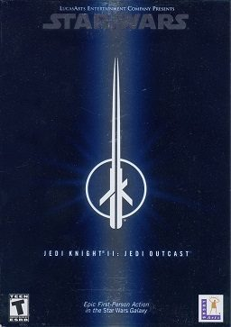

Jedi Knight II: Jedi Outcast (PC)



(Activision)
Jedi Knight, and its prequel Dark Forces, were perhaps two of the best Star Wars video games ever made - the most successful in authentically recreating the characters, visuals, and mythology of the Star Wars universe. But most importantly, Jedi Knight gave players the opportunity to wield a lightsaber at Stormtroopers, as well as using the familiar powers of the force. For Jedi Knight II: Jedi Outcast, the development has been handed over to the prestigious development team Raven, built with the always reliable and beautiful Quake III engine. In Jedi Knight II you once again step into the shoes of Kyle Katarn, the familiar protagonist of the previous games, working with his companion Jan Oors as a mercenary.
Beginning with the familiar Star Wars intro and theme, the first thing that strikes you is the graphics: make no mistake, JKII is a beautiful game. Full to the brim with nice little graphical touches, effects and details, as well as extraordinary character animation, JKII has possibly the best graphics seen in any Star Wars game to date. Perhaps a few more non-player characters would have been nice, as well as a couple of non-essential interactive objects, in order to give the environments that living, breathing quality of realism. With that said, everything is authentic to the Star Wars universe, and references to the fiction are everywhere: giant modelled X-Wings, Tie-Fighters, Imperial Walkers, recognizable droids that issue familiar bleeps at you, and an intergalactic drinking-hole that might as well be the infamous bar scene from the original Star Wars, complete with zany aliens and jazzy bar music.
The lightsaber training sequence at the Yavin temple is a classic gaming moment; you meet with a lovingly recreated C3PO and R2D2, observe Jedi Masters training in combat, and are instructed by none other than Luke Skywalker himself. The Stormtroopers look, move, speak, and act just like, well… stormtroopers, regularly issuing stock-standard stormtrooper phrases like “Did you see anything?” “Get behind him!” and “Lets see some ID!”
In terms of gameplay, the initial few hours of JKII are deceptively disappointing, generic shooter action without the use of either a lightsaber or force powers. But these stages are merely a warm-up for things to come. Raven have chosen to slowly reveal the complexity of the game to the player, emphasising the joy of discovery, and once you obtain your trusty lightsaber once again, that’s when the fun really starts. The lightsaber combat is immensely satisfying and extremely cool, and lots of players will most likely opt to use the lightsaber right through the game. But for when you can’t get close enough to your opponents, you’ll always have a Tenloss-Disruptor Sniper rifle handy to zoom in close and vaporise the bad guys. The lightsaber use is also much more complex than in the original Jedi Knight, with different attacks and some unbelievable one-on-one Jedi lightsaber duels. Combat is fast and frenetic, but with your lightsaber and force powers combined, you’re a hard-assed tactician. You can string together acrobatic attacks with your lightsaber, and slow down time to run rings around your enemies and push them into the wall, blocking their attacks and knocking their weapons out of their hands. While the acquiring of force-powers is linear, they are implemented in a better way than in Jedi Knight: rather than potentially ignoring them, you are required to make use of them in order to survive and progress through the game.
Beyond the combat, JKII is a challenging game which forces you to play smartly. The puzzles contained require careful observation, logical thinking, and interaction with the environment, a little frustrating at times but always logical; and when coupled with the use of force powers and the complexity of the lightsaber combat, it makes for very satisfying and deep gameplay. If any criticism can be levelled at JKII at all, it’s that the environments, while always huge and visually stunning, can sometimes seem to be a little bit without life, perhaps a teensy bit bland and cold.
While Jedi Knight II is a great game, it has little to offer that is new. What it does offer is a refinement of the original game’s concepts, along with far superior graphics. At the end of the day, the gameplay of JKII is infinitely more sophisticated than say, the disappointing Return To Castle Wolfenstein, or even the commendable Medal Of Honour. Recommended for both actions fans and Star Wars fans alike, JKII is easily one of the best action games to come out so far in 2002.
8.5/10